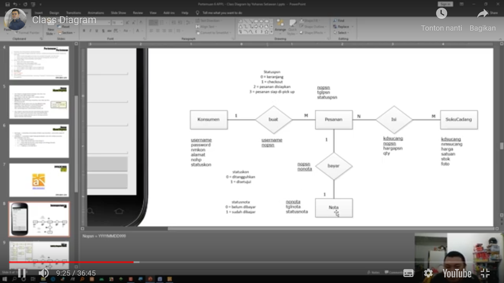

Hasil penyaduran pertemuan 6:
- Mengingatkan kembali terkait tata tertib kegiatan perkuliahan dan kontrak perkuliahan
- Mejelaskan terkait nilai kehadiran dengan membuat file readme.md dan nilai tugas dengan membuat saduran
- pada pertemuan ke 6 ini mempelajari Class Diagram
- Meng elaborasi fungsi class diagram yaitu untuk menggambarkan hubungan antar class atau hubungan antar tabel
- Memahami structure dari Class Diagram, yang terdiri dari :
- Nama class atau tabel
- Attribut yang di isi dengan field yang menjadi key, nama field, tipe data, serta lebar panjang data
- Method diisi dengan operasi apa saja yang di lakukan pada class/tabel, mmisal : select/baca, inserct/tambah/simpan. update/ubah, delete/hapus dst
- Memahami konsep Class Diagram sperti Stereotype dan Multiplicity
- Menjelaskan ERD yang dalam pertemuan sebelumnya telah di buat rancangan layarnya mulai dari entitasnya, relasi, atribut, cardinality serta karakternya
- Entitas yang di jelaskannya yaitu, Konsumen, Pesanan, Suku Cadang sampai di Nota
